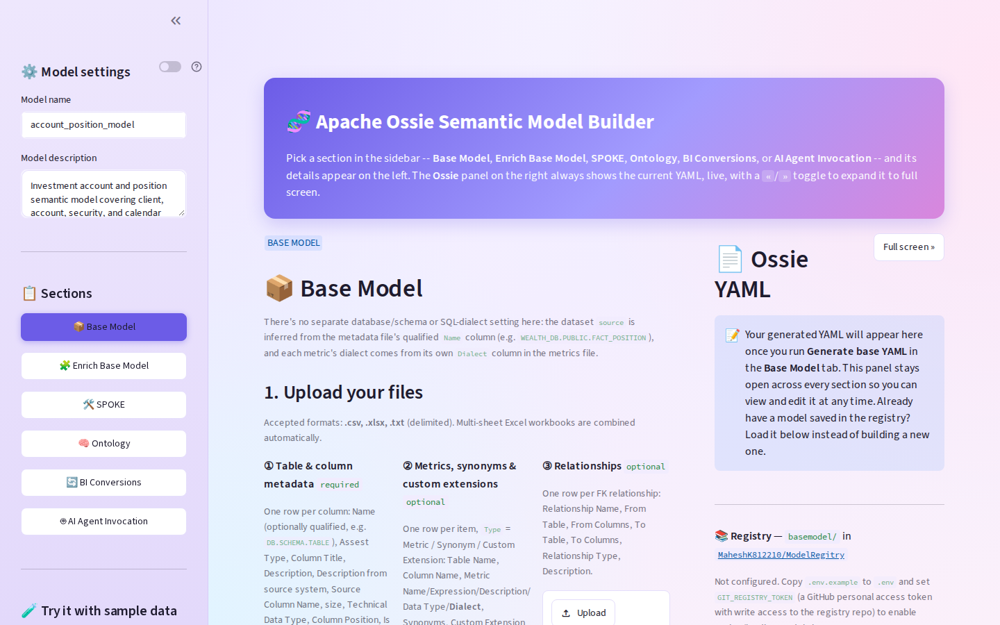
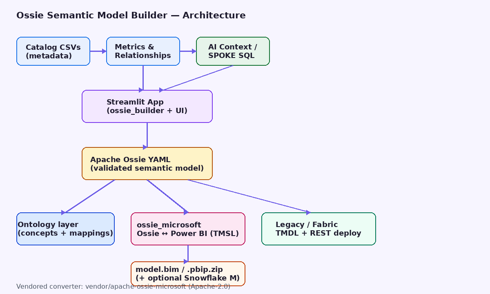
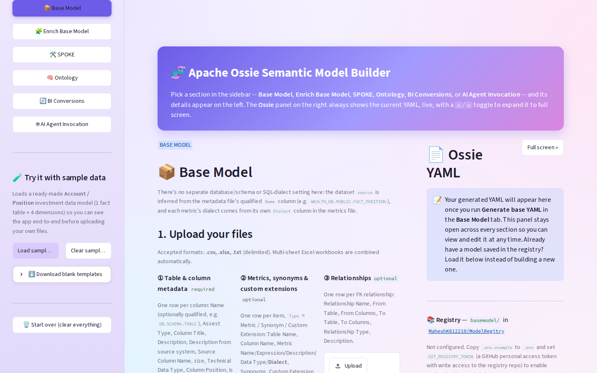
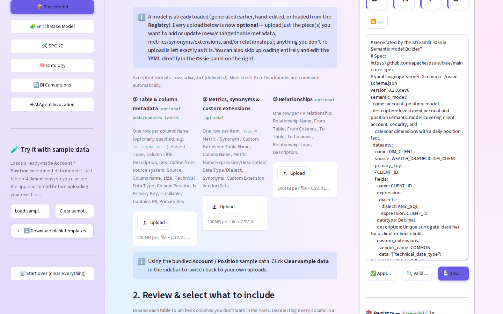
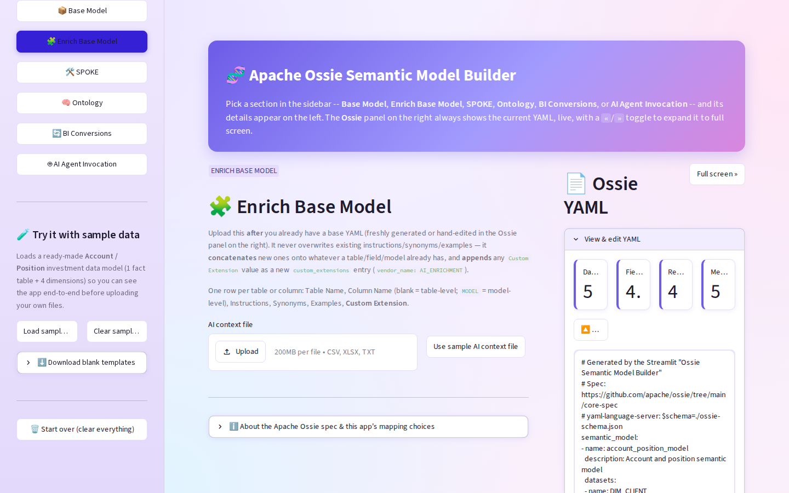
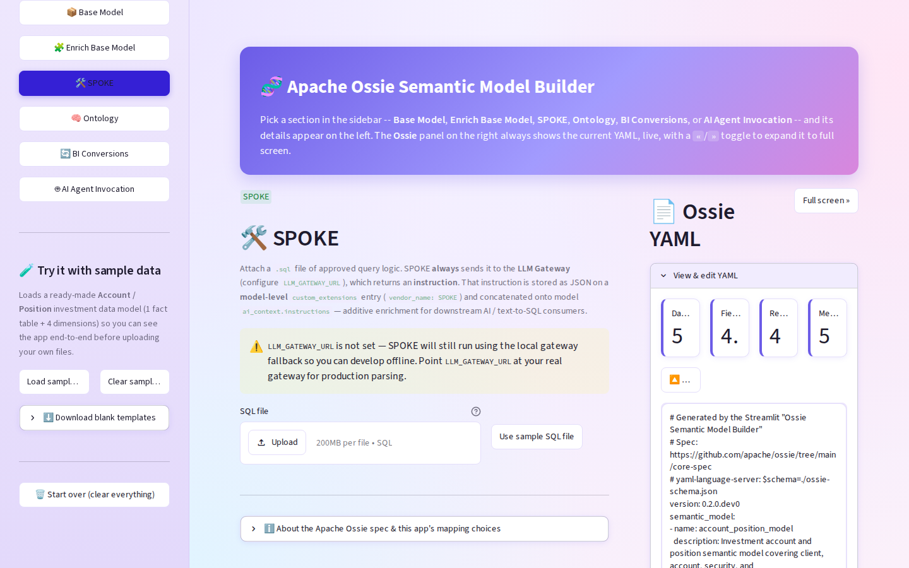
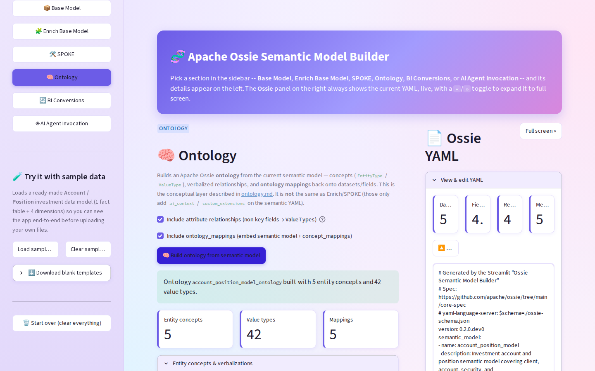
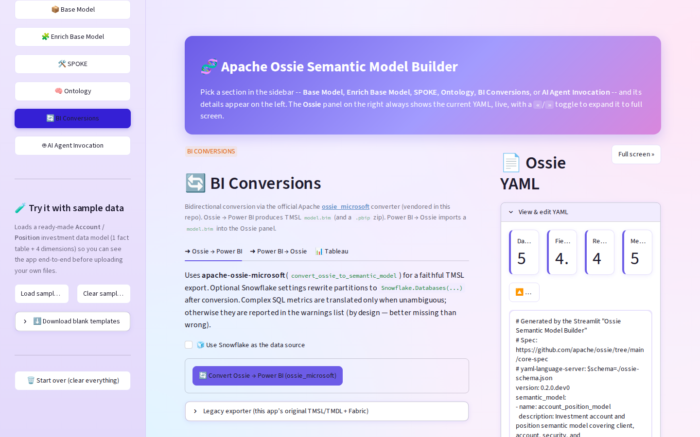
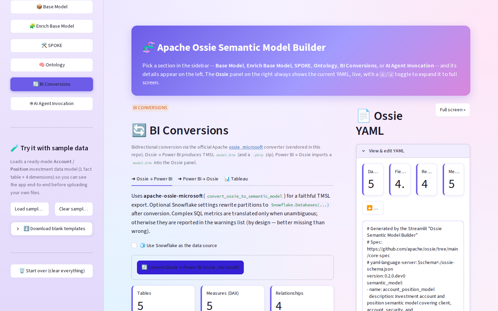
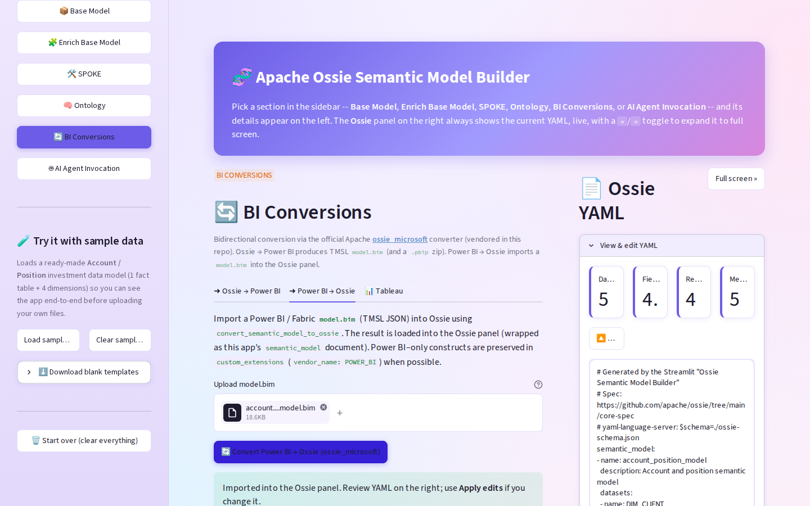

Audience: Data platform, analytics engineering, BI, and AI/text-to-SQL stakeholders
Product: Apache Ossie (Open Semantic Interchange) Semantic Model Builder
Primary UI: Streamlit web app
Spec: Apache Ossie core-spec (0.2.0.dev0)
How to publish this page to Confluence
1. Create a blank Confluence page.
2. Attach all files from docs/images/ (or drag them into the page).
3. Paste this Markdown into Confluence using the Markdown macro, or import the Word file docs/Ossie_Semantic_Model_Builder_Design_and_Capabilities.docx.
4. After paste/import, re-link images if needed (Confluence may rename attachments).
See also: docs/HOW_TO_PUBLISH_TO_CONFLUENCE.md.
The Ossie Semantic Model Builder turns catalog-exported spreadsheets into a validated Apache Ossie semantic model YAML, then optionally:
ossie_microsoft converter (TMSL model.bim / .pbip)Business benefit: one governed semantic definition that can feed BI (Power BI / Fabric) and AI/text-to-SQL consumers without hand-building models twice.

Figure 1 — Application home: sidebar sections, Base Model upload area, Ossie YAML panel.
| Pain | Without this tool | With this tool |
|---|---|---|
| Semantic models live only in Power BI | Hard to reuse for AI / SQL agents | Ossie YAML is the portable source of truth |
| Catalog → BI is manual | Weeks of Tabular modeling | CSV → validated Ossie → TMSL in minutes |
| Metrics drift across tools | Different DAX vs SQL definitions | Metrics captured once; converter translates where safe |
| Public-repo import blocked | Cannot pull Apache packages live | Converter vendored under vendor/apache-ossie-microsoft |
| Round-trip from Fabric/PBI | Rebuild Ossie by hand | Upload model.bim → Ossie panel |
ossie_microsoft for Ossie ↔ Power BI (not a one-off hack). apache/ossie repo; source is committed locally. Snowflake.Databases(...) M partitions. 
Figure 2 — High-level architecture: catalog inputs → Streamlit builder → Ossie YAML → Ontology / Power BI / Fabric paths.
{"semantic_model":[...]}; BI formats are exports/imports. ossie_microsoft owns SQL→DAX safety rules and POWER_BI stash round-trip. powerbi_export.py + fabric_deploy.py for TMDL + Fabric REST when needed. | Component | Role |
|---|---|
app.py | Streamlit UI (sections, YAML panel, registry) |
ossie_builder.py | CSV/XLSX → Ossie model, merge, validate |
ontology_builder.py | Semantic model → Ossie ontology + mappings |
llm_gateway.py | SPOKE: SQL → instruction JSON via LLM gateway |
ossie_microsoft_bridge.py | Unwrap/wrap app models; call official converter; PBIP zip; Snowflake M |
vendor/apache-ossie-microsoft/ | Official Apache converter (Apache-2.0) |
powerbi_export.py | Legacy TMSL/TMDL export + metric preview |
fabric_deploy.py | Legacy Fabric REST deploy (TMDL) |
git_registry.py | Optional GitHub Contents API save/load |
{"semantic_model": [ { name, datasets, relationships, metrics, ... } ]} ossie_microsoft expects a flat Ossie document: { version, name, datasets, ... } Upload catalog extracts → generate validated Ossie YAML.

Figure 3 — Sample Account/Position metadata loaded; tree selection of tables/columns.

Figure 4 — After **Generate base YAML**: live Ossie panel with datasets, fields, relationships, metrics.
Capabilities
source from qualified Name (e.g. WEALTH_DB.PUBLIC.FACT_POSITION) sourceColumn schema/ossie-schema.json Layer AI/business context without overwriting the base.

Figure 5 — Enrich Base Model: upload AI context CSV to append instructions, synonyms, examples.
Attach approved .sql → LLM Gateway → model-level custom_extensions (vendor_name: SPOKE).

Figure 6 — SPOKE section: SQL attachment and enrichment into the semantic model for downstream AI.
Derive conceptual EntityType / ValueType ontology + mappings from FACT/DIM semantic model.

Figure 7 — Ontology section: conceptual layer alongside (not replacing) the semantic YAML.
Bidirectional conversion via official ossie_microsoft.

Figure 8 — BI Conversions entry: Ossie → Power BI, Power BI → Ossie, Tableau (placeholder).
convert_ossie_to_semantic_model model.bim (TMSL) and .pbip.zip 
Figure 9 — Successful Ossie → Power BI: tables / measures / relationships + downloads.
model.bim convert_semantic_model_to_ossie custom_extensions (POWER_BI) when possible
Figure 10 — Power BI → Ossie import success and YAML reload.
| Path | Format | Fabric REST in UI? |
|---|---|---|
Official ossie_microsoft | TMSL (model.bim) | Not wired in UI yet (engine exists in vendor package) |
| Legacy expander | TMDL via fabric_deploy.py | Yes — workspace ID + bearer token |
Note: Fabric accepts both TMSL and TMDL. TMDL is preferred for git-oriented projects; TMSL remains the interchange/API format used by the official converter.
Placeholder for future NL Q&A against the current Ossie model.
| TMSL | TMDL | |
|---|---|---|
| What | JSON (model.bim) | Folder of .tmdl text files |
| Age | Established Tabular scripting format | Newer project/source format |
| Best for | Converters, APIs, Tabular Editor, round-trip | Fabric/Power BI Project git workflows |
| This app’s official path | Yes (primary) | Legacy / Fabric deploy path |
Why this tool uses TMSL for Ossie ↔ Power BI: the official Apache ossie_microsoft converter’s public API is TMSL in / TMSL out. That is the correct interchange choice; TMDL remains available for Fabric-oriented legacy packaging.
pip install -r requirements.txt && streamlit run app.py → http://localhost:47531 model.bim or .pbip.zip model.bim → Convert Power BI → OssieSnowflake.Databases(...) M sample_data/)| File | Purpose |
|---|---|
01_table_column_metadata.csv | Tables/columns (required) |
02_metrics_synonyms_extensions.csv | Metrics, synonyms, extensions |
03_relationships.csv | FK relationships |
04_ai_context.csv | Enrichment |
05_spoke_*.sql | SPOKE SQL |
06_*_ontology.yaml | Sample ontology |
| Artifact | Producer |
|---|---|
| Ossie semantic YAML | Base / Enrich / SPOKE / import |
| Ontology YAML | Ontology section |
model.bim (TMSL) | Official converter |
.pbip.zip | Bridge packaging |
| TMDL + Fabric deploy | Legacy path |
.env (see .env.example) — never baked into exports. LICENSE / NOTICE under vendor/apache-ossie-microsoft/..pbip report scaffold is best-effort; model.bim alone remains usable via Tabular Editor.git checkout cursor/ossie-yaml-streamlit-app-7d77
pip install -r requirements.txt
streamlit run app.py
# opens http://localhost:47531 (see .streamlit/config.toml)
pytest # optionalEditable install of the official converter is included via:
-e ./vendor/apache-ossie-microsoftin requirements.txt.
README.md*Document version: 1.0 — generated for Confluence / stakeholder review.*